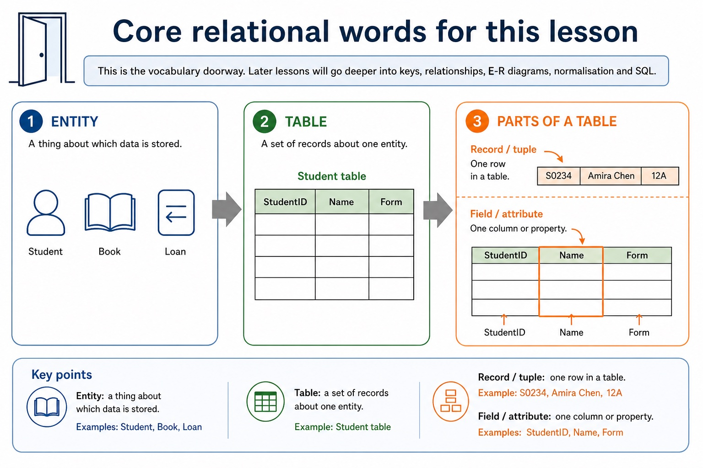

S8.01, S8.02 | Select what to omit, teach briefly or explore in depth.
Quickdiagnose + essentials
Fullcomplete explanation
Deepprerequisites + extension
Choosepractice by need
Teacher choice
Choose the depth for this group
Quick route
Use the diagnostic, learning objectives, first worked example and foundation question. Stop once the learner can explain the central distinction accurately.
Full route
Teach every core explanation point, the worked example and all lesson questions. Use the visual only when it adds a different representation.
Deep route
Add the prerequisite refresher, ask learners to connect the concept checklist, discuss the labelled extension and complete a transfer question without a model answer.
Part 1 | optional depth
Prerequisite knowledge and quick diagnostic
Recall S8.01 before starting this lesson.
Give one accurate definition or method step before continuing. If it is missing, revisit only that prerequisite.
Open optional prerequisite refresher
Version 2 requires both sides of the comparison: limitations of file-based storage/retrieval and relational-database features that address those limitations. Benefits must be linked to a mechanism rather than asserted generically.
Explain limitations of file-based systems and how relational databases address them.
Part 2 | deliberately over-complete
Knowledge explanation
Learning objectives
Explain limitations of file-based systems and how relational databases address them.
Open the concept checklist and choose what to teach
limitations
file-based
relational
databases
redundancy
inconsistency
linked tables
entity
table
record
tuple
field
attribute
primary key
candidate key
secondary key
foreign key
relationships
one-to-one
one-to-many
many-to-many
referential
integrity
indexing
Detailed explanation
Teach all points, or select only the ones this group needs. The list is intentionally fuller than a fixed lesson slot.
Version 2 requires both sides of the comparison: limitations of file-based storage/retrieval and relational-database features that address those limitations. Benefits must be linked to a mechanism rather than asserted generically.
Version 2 explicitly names entity, table, record, field, tuple, attribute, primary key, candidate key, secondary key, foreign key, one-to-one, one-to-many, many-to-many, referential integrity and indexing. Secondary key is retained as a distinct retrieval term, not an alias for an alternate candidate key.
A file-based approach stores data in separate application files. The same fact may be repeated in several files or records, causing redundancy and wasted storage. Updating only some copies creates inconsistency; insertion and deletion can also lose or require unrelated facts. Separate files may use incompatible formats, isolate data, duplicate validation/security code and make shared querying, concurrent access, backup and recovery harder to manage.
A relational database addresses these limitations by separating entities into linked tables, storing shared facts once, identifying records with keys and enforcing relationships and constraints centrally. A DBMS supplies shared query processing, integrity, security, access rights and backup. These mechanisms reduce particular file-based risks; a relational design is not automatically smaller, simpler or error-free.
Record and tuple are corresponding relational terms for one row; field and attribute are corresponding terms for one column.
Relational databases reduce selected file-based limitations by storing shared facts once in linked tables with centrally enforced rules.
An entity is a real-world thing about which data is stored and is commonly represented by a table. A table contains records (tuples); each record describes one entity occurrence. A field (attribute) is one named property or column. These paired terms are related but should not be collapsed into one definition.
A candidate key is a minimal field or field set that uniquely identifies a record. One candidate key is selected as the primary key. A secondary key is a field used as an additional retrieval or ordering route and need not be unique; it is not another name for an unselected candidate key. A foreign key refers to a key in a related table. An index is a lookup structure built on one or more fields: it can speed retrieval but uses storage and must be maintained after changes.
A foreign key is an attribute in one table that refers to a primary/candidate key in another table. Referential integrity requires every non-null foreign-key value to match an existing referenced key.
A one-to-one relationship links one record on each side. A one-to-many relationship links one parent record to many child records. A many-to-many relationship is normally implemented through a linking entity/table that creates two one-to-many relationships. Referential integrity prevents orphan records: insert, update and delete operations may be rejected or handled by a defined cascade/null policy, but must not silently leave an invalid reference.
A relational database stores data in tables made of records and fields. A primary key uniquely identifies a record; a foreign key links to a primary key in another table and creates a relationship.
Indexing creates an additional lookup structure for one or more fields so matching records can be located more quickly. The index consumes storage and must be updated when indexed data change.
Worked example
Keys for a student table / Delete a department / Use keys and an index: In Student(StudentID, Email, TutorGroup), StudentID and Email may be candidate keys if both are unique and minimal; StudentID is selected as primary. TutorGroup can be a secondary key for retrieving all students in one group even though many records share the value. An index on TutorGroup can provide a faster lookup route. If Employee.DepartmentID refers to Department.DepartmentID, deleting a department with employees would break referential integrity unless deletion is rejected or an authorised cascading policy handles dependent rows. StudentID is the primary key of Student. DepartmentID is a foreign key linking to Department. An index on Surname can speed searches by surname without changing which field is the primary key.

Core relational words for this lesson. One maintained explanation is shown as an image on larger screens and as text on small screens.
This is the vocabulary doorway. Later lessons will go deeper into keys, relationships, E-R diagrams, normalisation and SQL.
A thing about which data is stored
Student, Book, Loan
A set of records about one entity
Student table
Part 3 | select by learner need
Practice by question type
explainexplainfoundation6 marks
Question 1. A clinic repeats patient details in separate appointment, billing and treatment files. Explain three file-based limitations and a relational-database feature that addresses each one.
Show answer and marking guidance
Answer: repeated patient facts cause redundancy or wasted storage; linked tables store a shared patient fact once; separate copies can become inconsistent after partial updates; central keys/constraints and one stored fact improve consistency; isolated files/formats make combined retrieval or control difficult; DBMS query, integrity, access-right or backup service addresses the named difficulty
Marking guidance: Do not award a generic claim such as 'relational is better' without a named limitation, mechanism and consequence.
Common error: For the command word explain, perform that exact action; do not replace it with an unrelated fact.
designrecallapplication7 marks
Question 2. A school currently repeats student details in a loan file. Propose a relational design and write a two-table query listing StudentName and DueDate for unreturned loans.
Show answer and marking guidance
Answer: identifies redundancy/inconsistency in the repeated file; separates Student and Loan with suitable primary keys; uses StudentID as a foreign key in Loan and preserves referential integrity; SELECT contains StudentName and DueDate; uses Student INNER JOIN Loan; ON matches Student.StudentID to Loan.StudentID; WHERE Loan.Returned = FALSE
Marking guidance: Do not accept a three-table query, comma-style join, unexplained table split or unsupported claim that normalisation alone validates every value.
Common error: Do not repeat the same point in different words; each mark needs a separate idea or method step.
applyrecalltransfer2 marks
Question 3. Which relational feature connects an order to its customer?
Show answer and marking guidance
Answer: A foreign key in Order referring to the Customer primary key.
Marking guidance: Award one mark for each distinct, technically accurate point or method step.
Common error: Do not copy the worked example unchanged; transfer the method and check it against the new context.
Related past-paper indexes
Reference
Marks
Command word
Question type
9618/12/W/24 Q6(i)
6
explain
explain
9618/11/W/24 Q3(i)
4
complete
recall
9618/11/W/24 Q2(a)
3
explain
explain
9618/11/W/24 Q2(i)
3
complete
recall
Index only: Cambridge question and mark-scheme wording is not reproduced on this public course page.
Part 4 | close when ready
Summary and exam reminders
Summary
Define from file-based systems to relational databases with the exact technical vocabulary expected by the syllabus.
Use the lesson method on a fresh context and show the intermediate decision, representation or calculation.
Match the shape of the answer to the command word and the available marks.
Check the final answer against the scenario instead of repeating a memorised sentence.
Common error to correct
Students often choose names as primary keys. Correction: a primary key must uniquely and reliably identify a record.
Exam technique
Follow the command word: state gives a fact; explain links a cause to a consequence; compare covers both sides.
Match the number of independent points or method steps to the available marks.
For from file-based systems to relational databases, use the exact technical term before applying it to the scenario.